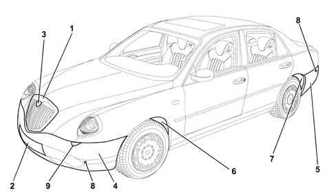

EXTERIOR TRIMS
- Path
- Descriptions > 70 FITTINGS > 7055 MOULDINGS ON PROTECTIONS > EXTERIOR TRIMS
- Kind
- system description
- Applies to
- all engines; all production periods
- Interactive page
- https://sloeber94.github.io/elrnDB-lThss/en/#/841005842
Applies to: all engines; all production periods
CONSTRUCTION SPECIFICATIONS
The front and rear bumpers are made from a crystalline thermoplastic resin (polypropylene) which is produced from the polymerization of propylene. It is a material resistant to humidity, oil and solvents and can withstand temperatures of up to 170 °C.
The bumpers contain impact absorbing buffers made from expanded polypropylene, a material whose resistance specifications remain constant to variations in temperature, ageing and possible distortion.
The wheel housings are protected by special liners made from a semi-rigid plastic material and have the function of protecting part of the engine compartment and the inside of the wing from foreign bodies and dirt, of providing insulation against noise for the passenger compartment and, lastly, of embellishing the parts of the housings that can be seen.
The lower part of the engine compartment is protected by a cover fixed to the chassis and the bumper.
The other elements (grilles, trims, etc.) are designed to enhance the style of the vehicle.

- 1 - Radiator grille
- 2 - No. plate holder
- 3 - Stem
- 4 - Front bumper
- 5 - Rear bumper
- 6 - Front wheel arch liner
- 7 - Rear wheel arch liner
- 8 - Parking sensors
- 9 - Headlamp washers
DESCRIPTION
The bumpers are colour-matched to the bodywork and constitute an important element.
The parking sensors (where fitted) are present in the front and rear bumpers.
The front bumper also houses the fog lights and the telescopic type headlamp washers.